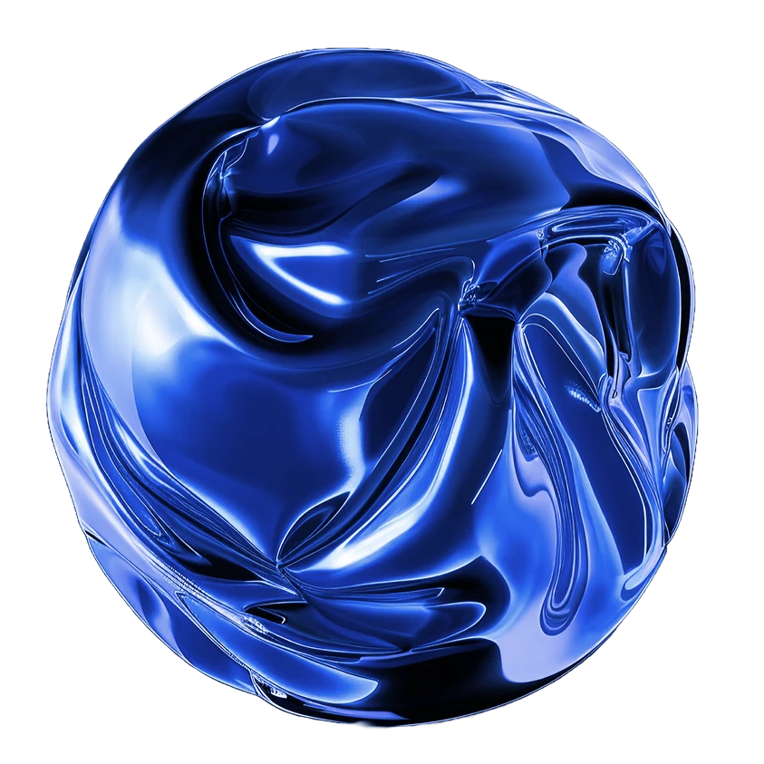
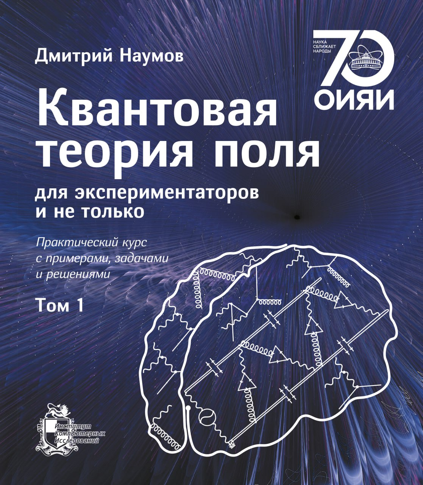
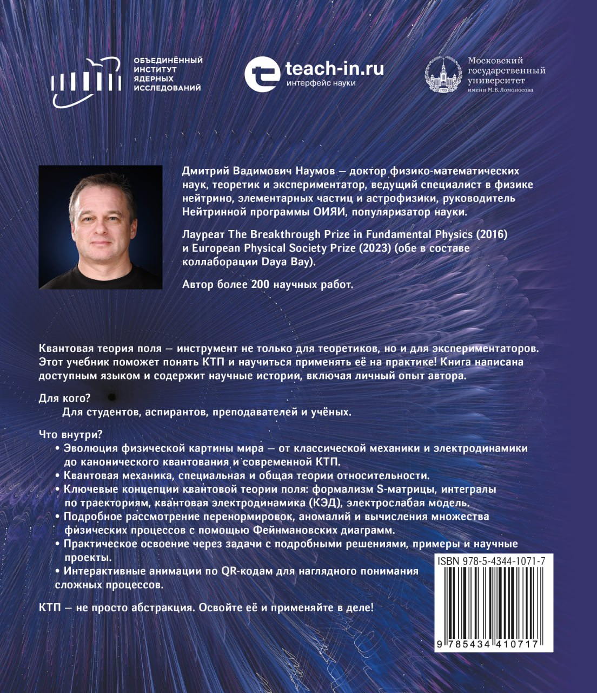

V. A. Naumov. Neutrinos in Physics & Astrophysics. Lecture notes.
Education
Courses, educational programs, textbooks, and self-study materials. Russian-language materials are marked at the link level.
Online program Neutrino Physics and Astroparticle Physics
Teach-in educational program on neutrino physics and astroparticle physics. The program page and presentation are in Russian.

Lecture Courses
Published materials Quantum Field Theory
Courses on quantum field theory, the Standard Model, renormalization, accelerated frames, and selected QFT topics.
Textbook
Quantum Field Theory for Experimentalists and More is a two-volume textbook with examples, problems, and solutions. The Russian edition is published; the English edition is in preparation.


Lecture course “Quantum Field Theory”
Basic QFT course: notes and video recordings are in Russian.
Lecture course “Introduction to the Standard Model”
Introductory Standard Model course: notes and videos are in Russian.
Lecture course “Renormalization in Quantum Field Theory”
Course notes and video playlists are in Russian.
Accelerated frames and the Unruh effect
Five Russian-language HTML lectures, from Rindler coordinates and entanglement entropy to the Unruh effect for scalar and fermion fields.
Attraction and Repulsion in Quantum Field Theory
Lecture on scalar QED and wave packets: how attraction and repulsion are encoded in QFT.
15 English lectures · 13 Russian lectures Statistical Analysis of Data
A practical course for high-energy physics, astrophysics, and experimental data analysis. English-language lectures are listed directly below; Russian-only supporting materials are marked.
01. Introduction
02. Probability and Bayes
03. Random variables and densities
04. Expectation and error propagation
05. Common probability distributions
06. Monte Carlo method
07. Statistical tests basics
08. Test statistics and multivariate methods
09. Goodness of fit and significance
10. Feldman-Cousins and CLs
11. Parameter estimation and maximum likelihood
12. Method of least squares
13. Interval estimation and limits
14. Nuisance parameters and systematics
15. Bayesian examples
Courses and master classes Neutrino Physics
Introductory neutrino lectures and the solar-neutrino masterclass are listed directly here.
Introduction to neutrino physics
Lecture course in neutrino physics.
Recommended Reading
The list was compiled by V. A. Naumov for the course Neutrinos in Physics & Astrophysics.
V. A. Naumov course materials
V. A. Naumov. Simple warm-up questions. In Russian.
V. A. Naumov. Cosmic Rays. Supplement to atmospheric and astrophysical neutrinos.
V. A. Naumov. Relevant and Irrelevant. Slides on topics covered in the lectures.
V. A. Naumov. List of exam questions. In Russian.
V. A. Naumov. Introduction to Cosmic Rays. Lectures for postgraduates of Florence University.
JINR. Neutrino Oscillations webpage.
Recommended books
A. De Angelis and M. J. M. Pimenta. Introduction to Particle and Astroparticle Physics. Questions to the Universe. Springer, 2015.
C. Giunti and C. W. Kim. Fundamentals of Neutrino Physics and Astrophysics. Oxford University Press, 2007.
F. Boehm and P. Vogel. Physics of Massive Neutrinos. 2nd ed., Cambridge University Press, 1992.
M. Fukugita and T. Yanagida. Physics of Neutrinos & Applications to Astrophysics. Springer-Verlag, 2003.
R. N. Mohapatra and P. B. Pal. Massive Neutrinos in Physics and Astrophysics. 3rd ed., WSLNP72, 2004.
S. Bilenky. Introduction to the Physics of Massive and Mixed Neutrinos. Lect. Not. Phys. 817, 2010.
V. Barger, D. Marfatia and K. Whisnant. The Physics of Neutrinos. Princeton University Press, 2012.
Z.-z. Xing and S. Zhou. Neutrinos in Particle Physics, Astronomy and Cosmology. Zhejiang University Press & Springer-Verlag, 2011.
N. Schmitz. Neutrinophysik. B. G. Teubner, Stuttgart, 1997.
Дж. Бакал. Нейтринная астрофизика. М.: Мир, 1993.
C. Grupen. Astroparticle Physics. Springer, 2005.
U. Sarkar. Particle and Astroparticle Physics. Taylor & Francis Group, 2008.
B. Falkenburg and W. Rhode, eds. From Ultra Rays to Astroparticles. A Historical Introduction to Astroparticle Physics. Springer, 2012.
C. Grupen and I. Buvat, eds. Handbook of Particle Detection and Imaging. Springer-Verlag, 2012.
H. V. Klapdor-Kleingrothaus and A. Staudt. Non-accelerator Particle Physics. Institute of Physics, 1995.
М. С. Лонгейр. Астрофизика высоких энергий. М.: Мир, 1984.
P. K. F. Grieder. Cosmic Rays at Earth. Research Reference Manual and Data Book. Elsevier, 2001.
P. K. F. Grieder. Extensive Air Showers. High Energy Phenomena and Astrophysical Aspects. Springer, 2010.
W. Greiner and B. Muller. Gauge Theory of Weak Interactions. 4th ed., Springer, 2009.
С. М. Биленький. Лекции по физике нейтринных и лептон-нуклонных процессов. М.: Энергоиздат, 1981.
Ю. Комминс и Ф. Буксбаум. Слабые взаимодействия лептонов и кварков. М.: Энергоиздат, 1987.
Л. Б. Окунь. Лептоны и кварки. 2-е изд., М.: Наука, 1990.
Д. С. Горбунов и В. А. Рубаков. Введение в теорию ранней Вселенной: теория горячего Большого взрыва. 3-е изд., М.: ЛЕНАНД, 2016.
Reviews and special items
J. Steinberger. The history of neutrinos, 1930-1985. What have we learned about neutrinos? What have we learned using neutrinos? Ann. Phys. 327 (2012) 3182-3205.
С. С. Герштейн, Е. П. Кузнецов, В. А. Рябов. Природа массы нейтрино и нейтринные осцилляции. УФН 167 (1997) 811-848.
S. S. Gershtein, E. P. Kuznetsov and V. A. Ryabov. The nature of neutrino mass and the phenomenon of neutrino oscillations. Phys. Usp. 40 (1997) 773-806.
F. F. Deppisch, P. S. Bhupal Dev and A. Pilaftsis. Neutrinos and Collider Physics. New J. Phys. 17 (2015) 075019.
V. A. Naumov. Solar neutrinos. Astrophysical aspects. Phys. Part. Nucl. Lett. 8 (2011) 683-703.
R. Wendell and K. Okumura. Recent progress and future prospects with atmospheric neutrinos. New J. Phys. 17 (2015) 025006.
E. Kh. Akhmedov. Majorana neutrinos and other Majorana particles: theory and experiment. arXiv:1412.3320.
S. F. King. Models of neutrino mass, mixing and CP violation. J. Phys. G 42 (2015) 123001.
Д. В. Наумов, В. А. Наумов. Квантово-полевая теория нейтринных осцилляций. ЭЧАЯ 51 (2020) 5-209.
D. V. Naumov and V. A. Naumov. Quantum Field Theory of Neutrino Oscillations. Phys. Part. Nucl. 51 (2020) 1-106.
А. Б. Александров и др. Поиск слабовзаимодействующих массивных частиц темной материи: состояние и перспективы. УФН 191 (2021) 905-936.
Popular books and articles
Рэй Джаявардхана. Охотники за нейтрино. Захватывающая погоня за призрачной элементарной частицей. Альпина нон-фикшн, 2015.
Frank Close. Neutrino. Oxford University Press, 2010.
Chris Waltham. Teaching neutrino oscillations. Am. J. Phys. 72 (2004) 742-752.
Александр А. Боровой. Как регистрируют частицы. По следам нейтрино. Библиотечка Квант, вып. 15. М.: Наука, 1981.
Александр А. Боровой. 12 шагов нейтринной физики. М.: Знание, 1985.
Айзек Азимов. Нейтрино - призрачная частица атома. М.: Атомиздат, 1969.
01. Neutrino 101
Basic properties, discovery history, and open questions.
02. Parity
Parity and weak interactions.
03. Spin and Neutrino Polarization
Spin, polarization, and neutrino helicity.
04. Direct Determination of the Neutrino Mass
Kinematics, accelerators, and tritium experiments.
05. Neutrino Oscillations in Vacuum
Plane-wave theory, oscillation lengths, and practical examples.
06. Neutrino Oscillations in Matter
Interaction potential, adiabatic approximation, and the MSW effect.
07. Paradoxes in Neutrino Oscillation Theory
Assumptions, paradoxes, wave packets, and one-dimensional theory.
08. Neutrinos in the Standard Model
Helicity, chirality, Dirac or Majorana nature, and mass generation.
09. Electromagnetic Properties of Neutrinos
Properties in the Standard Model, beyond it, and experiments.
10. Sterile Neutrinos
Theory, experiments, and current status.
11. Neutrino Interactions with Matter
Cross sections, nuclear effects, coherent scattering, and the neutrino floor.
12. Experimental Methods of Neutrino Detection
Scintillators, Cherenkov, radiochemical, tracking, and other methods.
13. Solar Neutrinos
Solar model, spectra, cross sections, experiments, and data fits.
14. Atmospheric Neutrinos
Air showers, simulations, experiments, deficit hypotheses, and data fits.
15. Accelerator Neutrinos
Beams, spectra, cross sections, experiments, and oscillation analysis.
16. Reactor Neutrinos
Reactors, nuclear reactions, spectra, experiments, and monitoring.
17. Geophysical Neutrinos
Earth thermal history, radioactive isotopes, and experiments.
18. Neutrinoless Double Beta Decay
Phenomenology, theory, experimental methods, results, and prospects.
19. Relic Neutrinos
Cosmology, spectrum, temperature, and experimental detection ideas.
20. Ultra-High-Energy Astrophysical Neutrinos
Sources, energy balance, experiments, methods, and goals.
21. Supernova Neutrinos
Supernova theory, spectra, oscillations, and collective effects.
22. Global Analysis
Chi2, likelihood, systematics, correlations, and degeneracies.
23. Mixing and CP Violation
Mixing matrix, unitarity, CP phase, theory, and experiment.
24. Neutrinos as a Window to New Physics
Possible signatures of new physics in the neutrino sector.
25. Neutrino Tomography
Earth, MSW physics, geoneutrinos, and ultra-high energies.
26. Reactors as Monitoring Tools
Reactor monitoring with neutrino methods.
Solar neutrino masterclass
Mini-course on solar-neutrino sources, oscillations, MSW physics, detector statistics, and an SK-like fit project.
00. Solar Neutrinos and Oscillations
Overview of solar neutrinos, oscillations, and basic phenomenology.
01. Fluxes, event rates, normalization fit
Solar-neutrino fluxes, event rates, and normalization fit.
02. Oscillations and fit
MSW physics, detector statistics, and an SK-like spectrum fit.
Project. SK-like fit
Final project with reproducible data.
Mini-course published Particle Physics
This map gives compact entry points, while each course keeps its own working site with lectures, assignments, and additional materials.
Mini-course: introduction to particle physics
Two introductory lectures on particles, fields, interactions, gauge invariance, mass generation, and weak decay.
Full course: introduction to particle physics
Working home for the future full course: English slides, book scaffold, and placeholders for problems, applets, and exam projects.
In preparation · first lecture draft Gravity
Working site for a future course on gravity and general relativity. The first Russian-language lecture studies light signals exchanged by freely falling objects near a black-hole horizon.
Planned Neutrino oscillation theory in QFT
Future specialized course on quantum-field descriptions of neutrino oscillations.